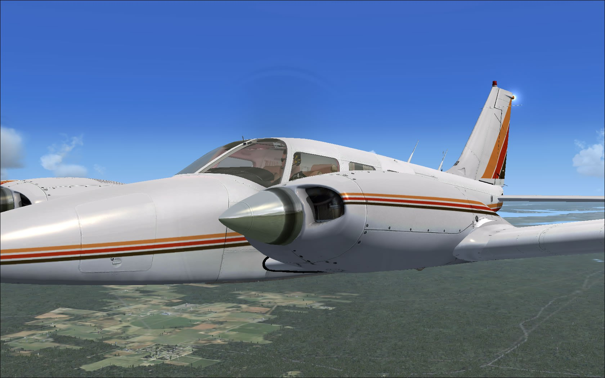

Piper PA-34 200T Seneca II
by Don Filer
Posted on January 1, 2019 at 12:00 PM

The second of five generations of the twin engine Piper Seneca, the 200T introduced in 1974, was a response to complaints about the original aircraft 's poor handling abilities. The new model incorporated changes to the control surfaces, including enlarged and balanced ailerons, and the addition of a rudder anti-servo tab. The "T" in the new model designation reflected a change to turbocharged, six cylinder Continental TSIO-360E or EB engines. The Seneca was manufactured by Piper beginning in the early 1970s and some 4.500 were produced. The Seneca II has six seats in a comfortable cabin and two turbocharged counter-rotating engines which produce 200 hp each.
First Impressions
Carenado has a reputation for producing realistic, high quality add-on airplanes for Flight Simulator and the Piper PA-34 200T is no exception. My first flight was a little rough as I have no previous experience flying a real twin engine propeller airplane (unless you count the Beachcraft Baron 58 in flight simulator). The Seneca felt very heavy on takeoff and was particularly heavy on landing the first time around. While I was excited Carenado included an autopilot and it works very well, it wasn't at all like the one in the Baron 58 or other simulator aircraft and takes a little getting used to. I set the plane up the same way I would any other fixed wing aircraft with flaps down, lights on, and a full head of steam for takeoff. That was before I read the documentation because as it turns out, you don't necessarily need flaps on takeoff in the Seneca II. So my first impressions were a little mixed.
Installation
After downloading and extracting the zip file you will have a 56.8 MB installation executable and 35 KB instruction file. When you run the executable, it copies the Carenado PA-34 Seneca II folder to your FSX Airplane sub directory.
Documentation
While complete and sufficient you will not be overwhelmed by pages of documentation. As a matter of fact you will have to search for it if you want to peruse it. There are 5 small Adobe files covering Seneca II Reference, Checklists, Emergency Procedures, VC Operation and Copyright information in the Seneca II FSX Airplane folder with all the other installed Seneca II files. Most of the documentation appears in bulleted or checklist format or as a diagram like the VC Operation file. While I appreciate brevity there just isn't anywhere to go if you can't get things to work.
What You Get
Carenado provides two models with two or three blade propeller configurations in three different paints plus a blank texture. A new feature from Carenado is original high quality digital stereo sound (44100 HZ) recorded from the original aircraft. The Seneca II has an interactive Virtual Cockpit and full moving parts: ailerons, elevators, rudders, flaps, rolling wheels and trim tab.
The PA-34 Seneca II was developed only for FSX and it supports FSX Acceleration/SP2 and both DX9 and DX10. A couple of the FSX specific features include external and internal dynamic shadows in the Virtual Cockpit, volumetric normal mapping and bloom lights. The Seneca II is a polygon optimized model and is frame-rate friendly.
Carenado also provides animated doors, sun visors, vibrating antenna and vibrating static wicks as well as navigation lights, beacons, landing lights, ice light on the left wing, transparent windows and 3D modeled pilot and cockpit areas.
As with so many of their previous offerings, details such as chocks, cowl plugs, baggage area, custom VC panel and gauges are quite realistic. The 200T doesn’t have a 2D panel per se but you can have all the gauges, the GPS and the autopilot on a separate screen so you won't really miss it. Very realistic light effects are noticeable on gauges including nightlight effects on the forward panel. Built-in zoom gauges are provided as are separate switches for instrument lights and dome light. You can toggle the yoke on or off in the VC allowing an uncluttered view of the instruments. The Piper Seneca II for FSX models the plane's actual weight and balance and provides realistic performance and behavior.
Flight Chacteristics
Certified for icy conditions and because of its tolerant behavior on only one engine, the PA-34 is frequently used as a multi-engine training aircraft. The Seneca II has a unique "feel" to it which conforms to my only other experience with a Carenado produced add-on, my Piper Cherokee 180. This simulator felt a bit heavy but responsive to the stick while the throttle had a slight delay to my input which I assume is an accurate simulation of the real deal. Once I became accustomed to the autopilot I found it to be a delight to fly with allowing me to ascend and descend to desired altitudes easily enough and to adjust to headings without incident. The Seneca II seems a little reluctant to lift off the ground on takeoff and most pilots will keep pulling back on the yoke until the bird pitches nose high unrealistically.
Exterior
One of the most outstanding attributes of the outside of the Seneca is the integration of the engines into the wings themselves. Since the aircraft is rather small the engines seem quite large compared to the wings and take up a significant portion of the view from inside the plane. Looking out either side you really can't see much besides engine and wing. The level of detail is always amazing on a Carenado produced airplane, the lettering on the sides of the plane and the name of the model itself stand out sharply.
Interior
I must admit to a new appreciation for simulator aircraft as Carenado produced a plane whose interior ambient lighting actually changes as darkness settles in. You will notice the instrument panel change color during this process and the results are amazing. The main overhead dome light is red and casts a reddish glow onto the forward panel and windshield. I was also amazed at how accurately the Seneca II interior is after viewing a photo of the instrument panel of a real one for sale. Carenado did an exceptional job rendering the panel and modeling the instruments and gauges. Now I confess to not knowing enough about some of the electronics in this plane to exercise everything so I can't vouch for all aspects of each device working like the real thing; but I would be quite surprised to learn that it didn't. The passenger view in the rear gives you a perspective of the roominess of the cabin and allows you to gaze out the windows to study the scenery. Even the yoke has a worn, used appearance where your thumbs would rub and dull the finish.
Sound
The engine sound on the 200T is a bit different from other twin engine propeller aircraft in flight simulator. If I didn't know better, I would say they sound a little rougher and noisier outside the cabin than say the Beach Baron or King Air. Since Carenado uses high quality Seneca II sounds from recordings of the actual plane it's hard to argue with the sound the engines make. Inside the cabin, engine noise is fairly quiet and is pretty appealing on long hauls. After a while you will get used to the sound two turbocharged propellers make when they are in harmony and you will be able to make them hum appropriately by adjusting the fuel mixture. !
Final Words
If you find a plane that compares favorably with one of your favorite aircraft, one that could easily become your everyday flyer, you should buy it. At $30 this baby definitely belongs in your hanger.
A couple of things I could not get to work like the window slit opening or the baggage compartment not that this matters all that much. I couldn't slide the curtains open or closed either and the autopilot isn't very easy to reach in the VC. If you want to use it you'll probably have to overlay it on the screen by entering (Shift+ 3).
While the autopilot is a bit different, by experimenting I found it quite manageable. After switching it on and clicking the heading button you will be able to change your heading with the heading bug - no problem. The difficulty comes when trying to ascend or descend. The up and down buttons on the left side of the autopilot work just fine and get you where you want to go. For whatever reason, when engaged they disengage the heading, so when you wish to re-engage the heading control you have to select it again on the autopilot.
Lifting off on takeoff and settling back down for a landing are touchy too and if you're not careful you will find yourself pitching up too high on takeoff and bouncing roughly on landing. Once you get used to the pitch controls and the way it handles, you'll get hours of enjoyment out of the Piper PA-34 200T Seneca II from Carenado.